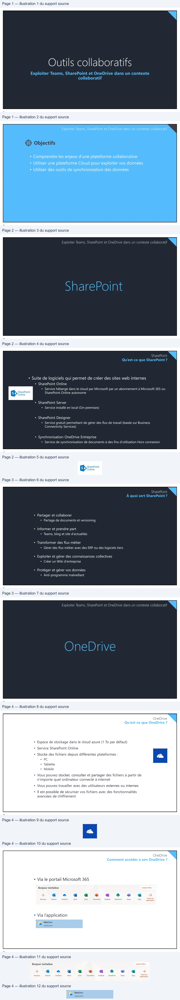
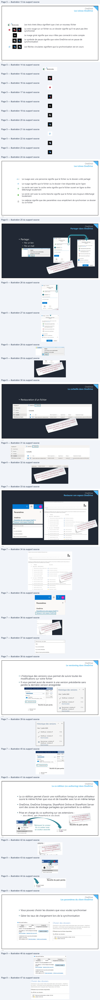
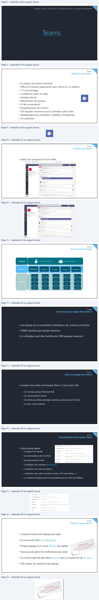
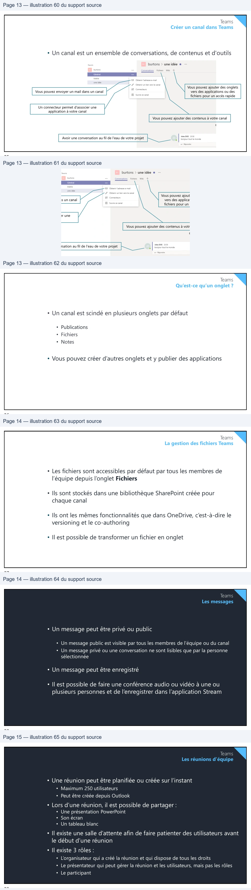

Transcription du document du Drive TSSR. La mise en forme est adaptée au Web ; les compléments IA du portail sont présentés séparément.
Exploiter Teams, SharePoint et OneDrive dans un contexte
collaboratif
1
Exploiter Teams, SharePoint et OneDrive dans un contexte collaboratif
Objectifs
• Comprendre les enjeux d’une plateforme collaborative
• Utiliser une plateforme Cloud pour exploiter vos données
• Utiliser des outils de synchronisation des données
2
Exploiter Teams, SharePoint et OneDrive dans un contexte collaboratif
3
SharePoint
Qu’est-ce que SharePoint ?
• Suite de logiciels qui permet de créer des sites web internes
• SharePoint Online
• Service hébergé dans le cloud par Microsoft par un abonnement à Microsoft 365 ou
SharePoint Online autonome
• SharePoint Server
• Service installé en local (On-premises)
• SharePoint Designer
• Service gratuit permettant de gérer des flux de travail (basée sur Business
Connectivity Services)
• Synchronisation OneDrive Entreprise
• Service de synchronisation de documents à des fins d'utilisation Hors connexion
4
> SharePoint
Online
SharePoint
À quoi sert SharePoint ?
• Partager et collaborer
• Partage de documents et versioning
• Informer et prendre part
• Teams, blog et site d'actualités
• Transformer des flux métier
• Gérer des flux métier avec des ERP ou des logiciels tiers
• Exploiter et gérer des connaissances collectives
• Créer un Wiki d'entreprise
• Protéger et gérer vos données
• Anti-programme malveillant
5
Exploiter Teams, SharePoint et OneDrive dans un contexte collaboratif
6
OneDrive
Qu’est-ce que OneDrive ?
• Espace de stockage dans le cloud azure (1 To par défaut)
• Service SharePoint Online
• Stocke des fichiers depuis différentes plateformes :
• PC
• Tablette
• Mobile
• Vous pouvez stocker, consulter et partager des fichiers à partir de
n’importe quel ordinateur connecté à internet
• Vous pouvez travailler avec des utilisateurs externes ou internes
• Il est possible de sécuriser vos fichiers avec des fonctionnalités
avancées de chiffrement
7
OneDrive
Comment accéder à son OneDrive ?
• Via le portail Microsoft 365
• Via l’application
8
Bonjour micheline
instaler Office
+
LA
e
|
a
L2
ai
C2
CA
LT
>
!
OneDrive
a
|
Application

OneDrive
Les icônes OneDrive
Les trois tirets bleus signifient que c'est un nouveau fichier
La croix rouge sur un fichier ou un dossier signifie qu'il ne peut pas être
synchronisé
Le nuage grisé signifie que vous n'êtes pas connecté à votre compte
Le symbole de pause signifie que votre OneDrive est en pause de
synchronisation
Les flèches circulaires signifient que la synchronisation est en cours
9
OneDrive
Les icônes OneDrive
Le nuage avec une personne signifie que le fichier ou le dossier a été partagé
Le nuage signifie que le fichier ou le dossier n'est disponible qu'en ligne
Le cercle vert avec la coche verte signifie que le fichier ouvert en ligne va être
téléchargé localement
Le cercle vert avec la coche blanche signifie que le fichier sera toujours téléchargé
localement
Le cadenas signifie que des paramètres vous empêchent de synchroniser ce dossier
ou ce fichier
10
—§ | Bookxisx
° GE
a La |
2
[(e]
eo
A
OneDrive
Partager dans OneDrive
• Partage :
• Par un lien
• Par un mail
11
OneDrive
La corbeille dans OneDrive
• Restauration d’un fichier
12
© Partager « Cook
U
=
=
ok
—
o
cum
fen
i
uvrir
g
Tose
Ou
a
ieee
rid
-
Epingl
SESE
©
Des
FI |
à Parager +
Partal
rapide
;
a
ger
.
ast
-
—
Por
-ocabooe
les liens
“ome
@»
anes avon a
Autres
es spécifiques
pensmmeuneaceaagro
a
&gentaSTE de
im
Défis
«la modification
denrat étant
date
d'expiratio
quer
Annuler
micheline JP
©. Mes fichi
a
©
ee
Suppr
D
Récents
imer [5Resouer]
A
Partagés
-
8
c
:
Corbeil
orbeille
blotveques aoe
.
Nom
enrchieràjeterx
Da
de
estaurer.dock
fe suppression
78/202
Suppr
20 12:56 AM
primé par
micheline JP
Créé par
michelin
Emplacems
ee
ent d'origine
personal
;
:
\
NÉ
4
Vmicheline.<
memeovyous yoneeanigenpov
= campus-eni f/D
FUNCASvenAACgans oroe
uments
see0 ow’?
OneDrive
Restaurer son espace OneDrive
13
OneDrive
Le versioning dans OneDrive
• L'historique des versions vous permet de suivre toutes les
modifications sur votre fichier
• Il vous permet aussi de revenir à une version précédente sans
perdre la dernière version enregistrée
14
o
ER?
w
I
OneDrive
°
Paramètres de votre espace OneDrive
F
Restaurer votre espace OneDrive
°
py Wont
e
a ue de
VE
Te rot
Sélectionnez une date
Ê
posPO
un NE
rs
N
ui
20 \
ù
ep nce
une22
Hier
5
es? ATOS
lly
a une semaine
Il y a trois semaines
Date et heure personnalisées
*
|
FE
Historique des versions
7
%*
Nom
dufichier
recettedu
pain perdu
jou | PBbCex
AaBbi
_
ET
nie.
et
Hier, 7juillet 2020
Emplacement
Cookbook
7
Sus
;
.
D Crane EM Ceca écematique Cook
A Modifié par :michelineJP
46
p
Modifiépar: micheline JP
714
4
.
Ouvrir
la version
Recette du pain perdu
Cd Renommé par : michelineJP
17:14
1.
Retrouver
le pain
Modifié par :michelineJP
2.
Cestprét
Ouvrir la version
OneDrive
La co-édition (co-authoring) dans OneDrive
• La co-édition permet d'avoir une notification lorsqu'un autre utilisateur
ouvre le même fichier que vous et de travailler avec lui en même temps
• OneDrive, OneDrive Entreprise, SharePoint Online et SharePoint Server
sont des zones de stockage partagées qui permettent la co-édition
• Prise en charge du co-authoring sur ces extensions :
• .docx (Word), .pptx (PowerPoint) et .xlsx (Excel)
Retrouver le curseur
du co-auteur avec
sa couleur associée
15
OneDrive
Les paramètres du client OneDrive
• Vous pouvez choisir les dossiers que vous voulez synchroniser
• Gérer les taux de chargement lors de la synchronisation
16
xnoring,
Le co-avé
AVEC
tils office
Les out cynchrove
deviennent +4)
8 Partage
Recette du pain perdu
a Yann GROHAN
Ps
1. Retrouver
le pain
Accéder à l'emplacement
2.
C'esthrêt
Ouvrir
care de visite
& Microsoft OneDrive
x
Choisir des dossiers
Réseau
Office
À propos de
Choisissezce que voulez
rendre
disponible
dans votre dossier « OneDrive
Paramètres
Compte
Enregistrement automatique
Eni-ecole ». Ces fichiers seront disponibles à la demande.
Les dossiers non
OneDrive - Eni-ecole (jdoe @labeni14.ovh)
sélectionnés seront masqués
dans
l'Explorateur de fichie
2Huetsmr 1024
Ga d'empace de sinciage
Fi Rendre tous les fichiers disponibles
Gérerlestockage Supprimer le len
vers ce PC
Ou afficher ces dossiers
1 emplacement est en cours de synchronisation
OneDrive - Eni-ecole
[AL] Fichiers qui ne sont pas dans un dossier (0,0 Ko)
294Ko utisé
surce PC Choisr
des dossiers Arrêter
la synchronisation
EAI
cookbook (294,2k0)

Exploiter Teams, SharePoint et OneDrive dans un contexte collaboratif
17
Teams
Qu’est-ce que Teams ?
• Un espace de travail centralisé
• Office et d'autres applications dans Teams en co-édition
• 1 To de stockage
• Conférence audio et vidéo
• Partage d'écran
• Planification de réunion
• Fil de conversation
• Enregistrement de réunion
• 250 équipes maximum qu’un utilisateur peut créer
• Multiplateformes (ordinateur, tablette, smartphone)
• Un calendrier
18
Teams
L’interface de Teams
• Teams est composé de trois volets
Volet Gauche
Volet Central
Volet Principal
19
Teams
Structure d’une équipe
Un ou des propriétaires
Un ou des membres
Equipe
Canaux
Général
Groupe 1
Groupe 2
Groupe 3
Groupe 4
publications
publications
publications
publications
publications
fichiers
fichiers
fichiers
fichiers
fichiers
Onglets
notes
notes
notes
notes
notes
applications
applications
applications
applications
applications
20
FO
a
à
|
| ÉBBRE
Teams
Qu’est-ce qu’une équipe dans Teams ?
• Une équipe est un ensemble d’utilisateurs, de contenus et d’outils
• 10000 membres par équipe maximum
• Un utilisateur peut être membre de 1000 équipes maximum
21
Teams
Créer une équipe dans Teams
• Lorsque vous créez une équipe Teams, il sera aussi créé :
• Un nouveau groupe Microsoft 365
• Un site SharePoint Online
• Une boîte aux lettres partagée (cachée par défaut dans Outlook)
• Un bloc-notes OneNote
22
Teams
Les paramètres d’une équipe Teams
• Vous pouvez gérer :
• L’image d’une équipe
• Les autorisations des membres
• Les autorisations invité
• L’utilisation des mentions @mentions
• L’utilisation de code d’invitation
• L’utilisation des outils amusants (emojis, GIF, autocollants…)
• La création de balises (seul le propriétaire peut en créer par défaut)
23
Teams
Qu’est-ce qu’un canal ?
• Compartimente votre équipe par sujet
• Un canal peut être privé ou public
• Chaque équipe à un canal Général par défaut
• Vous pouvez gérer les notifications par canal
• Un canal supprimé peut être restauré avec un maximum de 30 jours
• 200 canaux au maximum par équipe
24
pce os
Laarrd'un pawn’avt
RouesLE cowPAT pesooulee”
tee yaoFone?

Teams
Créer un canal dans Teams
• Un canal est un ensemble de conversations, de contenus et d'outils
Vous pouvez ajouter des onglets
Vous pouvez envoyer un mail dans un canal
vers des applications ou des
fichiers pour un accès rapide
Un connecteur permet d'associer une
application à votre canal
Vous pouvez ajouter des contenus à votre canal
Avoir une conversation au fil de l'eau de votre projet
25
Teams
Qu’est-ce qu’un onglet ?
• Un canal est scindé en plusieurs onglets par défaut
• Publications
• Fichiers
• Notes
• Vous pouvez créer d’autres onglets et y publier des applications
26
Be
burtons
> une idée *
~
Doro
ce
Conversations
Fichiers
Wiki
+
—
Obtenir
un lien vers le canal
Æ
Suivre
ce canal
(
Teams
La gestion des fichiers Teams
• Les fichiers sont accessibles par défaut par tous les membres de
l’équipe depuis l’onglet Fichiers
• Ils sont stockés dans une bibliothèque SharePoint créée pour
chaque canal
• Ils ont les mêmes fonctionnalités que dans OneDrive, c’est-à-dire le
versioning et le co-authoring
• Il est possible de transformer un fichier en onglet
27
Teams
Les messages
• Un message peut être privé ou public
• Un message public est visible par tous les membres de l’équipe ou du canal
• Un message privé ou une conversation ne sont lisibles que par la personne
sélectionnée
• Un message peut être enregistré
• Il est possible de faire une conférence audio ou vidéo à une ou
plusieurs personnes et de l’enregistrer dans l’application Stream
28
Teams
Les réunions d’équipe
• Une réunion peut être planifiée ou créée sur l’instant
• Maximum 250 utilisateurs
• Peut être créée depuis Outlook
• Lors d’une réunion, il est possible de partager :
• Une présentation PowerPoint
• Son écran
• Un tableau blanc
• Il existe une salle d’attente afin de faire patienter des utilisateurs avant
le début d’une réunion
• Il existe 3 rôles :
• L’organisateur qui a créé la réunion et qui dispose de tous les droits
• Le présentateur qui peut gérer la réunion et les utilisateurs, mais pas les rôles
• Le participant
29
